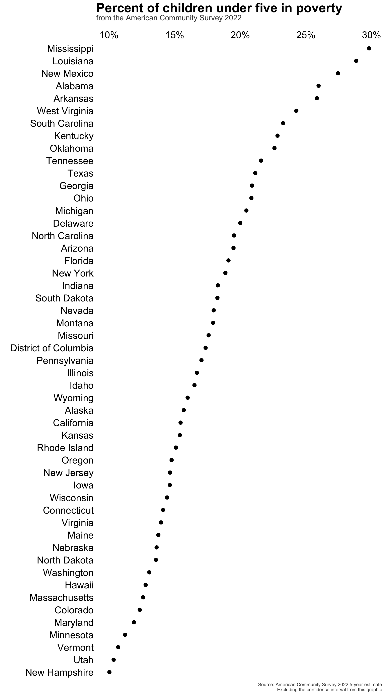
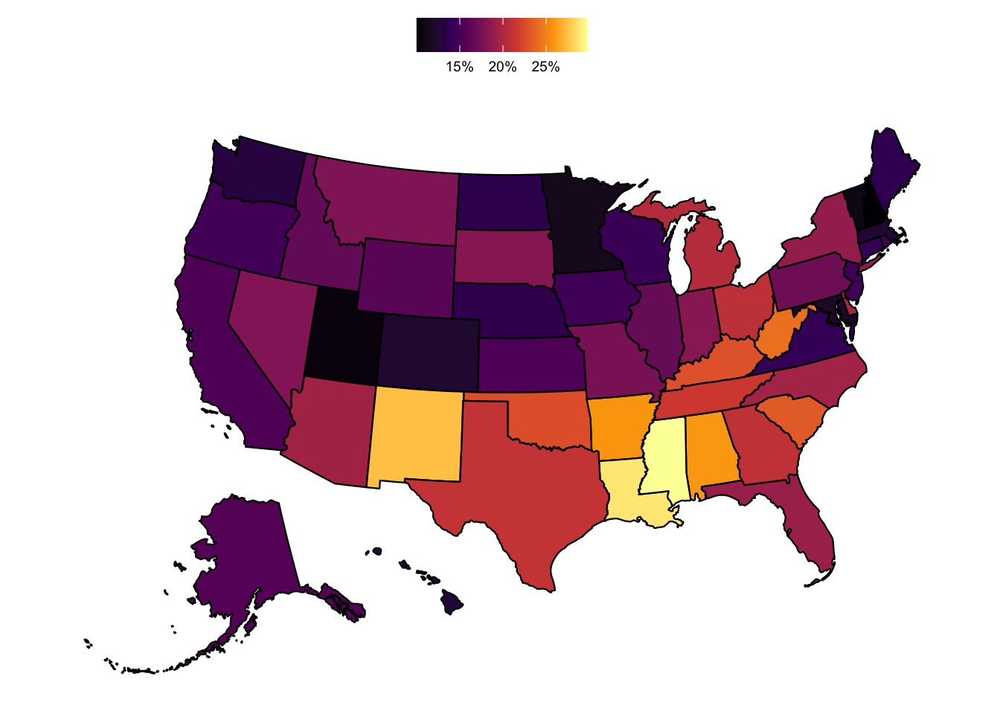

library(tidyverse)
library(tidycensus)
library(scales)
library(janitor)
library(gt)
library(usmap)
# census_api_key('INSERT KEY HERE')Introduction
I’ve used data from the U.S. Census Bureau several times, and for this project, I wanted to reacquaint myself with the tidycensus:: package to gather and wrangle data. I also wanted to use the usmap:: package to generate a simple U.S. map, and the gt:: package to display the data in a nice table format.
Setup
For this analysis, I’m interested in looking at the most recent state-level child poverty data available from the U.S. Census Bureau. The tidycensus:: package allows API access to the decennial Census, as well as the more frequent American Community Survey (ACS).
The tidycensus::load_variables() function provides a simple way to query the available data within each product. Combining this with stringr::str_detect() is a nice way to search through the tens of thousands of data series that are available through the U.S. Census API.
load_variables(2022, "acs1", cache = TRUE) %>%
# used this to search for some Under 5 years variables of interest
filter(str_detect(label, "Under 5 years"))# A tibble: 286 × 3
name label concept
<chr> <chr> <chr>
1 B01001A_003 Estimate!!Total:!!Male:!!Under 5 years Sex by Age (White Alone)
2 B01001A_018 Estimate!!Total:!!Female:!!Under 5 years Sex by Age (White Alone)
3 B01001B_003 Estimate!!Total:!!Male:!!Under 5 years Sex by Age (Black or Af…
4 B01001B_018 Estimate!!Total:!!Female:!!Under 5 years Sex by Age (Black or Af…
5 B01001C_003 Estimate!!Total:!!Male:!!Under 5 years Sex by Age (American In…
6 B01001C_018 Estimate!!Total:!!Female:!!Under 5 years Sex by Age (American In…
7 B01001D_003 Estimate!!Total:!!Male:!!Under 5 years Sex by Age (Asian Alone)
8 B01001D_018 Estimate!!Total:!!Female:!!Under 5 years Sex by Age (Asian Alone)
9 B01001E_003 Estimate!!Total:!!Male:!!Under 5 years Sex by Age (Native Hawa…
10 B01001E_018 Estimate!!Total:!!Female:!!Under 5 years Sex by Age (Native Hawa…
# ℹ 276 more rowsFor this demo, I’ll use the following series:
- B01001_003: Estimate!!Total:!!Male:!!Under 5 years (all racial groups)
- B01001_027: Estimate!!Total:!!Female:!!Under 5 years (all racial groups)
- B17001_004: Estimate!!Total:!!Income in the past 12 months below poverty level:!!Male:!!Under 5 years
- B17001_018: Estimate!!Total:!!Income in the past 12 months below poverty level:!!Female:!!Under 5 years
Initial tour of key tidycensus::get_acs() function
The tidycensus:: package has so much to offer (and I still have plenty to learn!). There are a bunch of useful helper functions/arguments to assist in fetching data. Some noteworthy ones include:
- Each variable returns the geography, an estimate, and the margin of error (“moe”). Geographies can span from states, regions and the country as a whole, down to areas like school districts, voting districts, census block groups, and many others.
summary_var=: often the variable that you want would be made more meaningful as a ratio or with a demonminator. For example, the number of children in poverty could be useful on its own, but you’re likely to want to see that series as a percent of the total children. With the summary_var argument, you can tell the function which secondary variable you want to grab in the same API call.ouput=wide: related to the above, I wanted to look at child poverty in a way that would require multiple summary variables (e.g. the percent of girls and boys in poverty). Since you can only have one summary variable,output='wide'allows you to grab all of the series that you may need in the same call.
df <- get_acs(geography = 'state',
variables = c('B01001_003', 'B01001_027', 'B17001_004', 'B17001_018'),
year = 2021,
output = 'wide')Getting data from the 2017-2021 5-year ACSTo make the data more user-friendly, I’ll update the column names of the table.
name_cols <- c('geoid', 'state',
'u5_male_estimate', 'u5_male_moe',
'u5_female_estimate', 'u5_female_moe',
'u5_male_pov_estimate', 'u5_male_pov_moe',
'u5_female_pov_estimate', 'u5_female_pov_moe')
colnames(df) <- name_colsAnd for this exercise, I’ll also drop the margin of error fields, since I’m not doing a statistical analysis that would require it.
df <- df %>%
select(-contains("moe"))Next, I’ll create some fields to combine gender-based poverty estimates and calculate a percent of the child population measure.
(df <- df %>%
mutate(u5_pop_total = u5_male_estimate + u5_female_estimate,
u5_pov_total = u5_male_pov_estimate + u5_female_pov_estimate,
u5_perc_in_poverty = u5_pov_total / u5_pop_total))# A tibble: 52 × 9
geoid state u5_male_estimate u5_female_estimate u5_male_pov_estimate
<chr> <chr> <dbl> <dbl> <dbl>
1 01 Alabama 151356 144276 38673
2 02 Alaska 25965 24826 3761
3 04 Arizona 210607 201999 41934
4 05 Arkansas 95410 89170 23947
5 06 California 1203859 1146476 190730
6 08 Colorado 165967 158279 20739
7 09 Connecticut 93734 88388 13053
8 10 Delaware 27567 26667 5690
9 11 District of C… 21890 21068 3962
10 12 Florida 571443 547351 110265
# ℹ 42 more rows
# ℹ 4 more variables: u5_female_pov_estimate <dbl>, u5_pop_total <dbl>,
# u5_pov_total <dbl>, u5_perc_in_poverty <dbl>df %>%
filter(state != 'Puerto Rico') %>%
ggplot(
aes(x=u5_perc_in_poverty,
y=reorder(state, u5_perc_in_poverty))) +
geom_point(size=3) +
labs(y='',
x='') +
ggtitle('Percent of children under five in poverty',
subtitle = 'from the American Community Survey 2021') +
scale_x_continuous(labels = percent,
position = 'top') +
my.theme
Quick mapping with usmap::
The usmapp:: package makes rendering a map of the US quick and easy. Though it’s not meant to replace sf:: or packages that allow for more sophisticated maps, it does allow for a quick way to make a U.S. map. For this demo, I’ll plot the state-level poverty data that I collected and manipulated in earlier steps.
This shows that child poverty is concentrated in southern and southeastern states (as a percent of the child population).
(perc_poverty_map <- plot_usmap(regions = 'states',
data = df,
values = 'u5_perc_in_poverty') +
# scale_fill_viridis_c() +
scale_fill_viridis_c(labels = scales::percent_format()) +
labs(title = md("**Estimated child poverty in U.S. states in 2021**"),
subtitle = "as a % of the total child population under 5 y.o.",
caption = "Source: 2021 American Community Survey") %>%
theme(legend.position = 'top',
legend.title = element_blank()))
Great tables with gt::
(df_tbl <- df %>%
select(state, region, u5_pov_total, u5_pop_total, u5_perc_in_poverty) %>%
# removing P.R. because it's not within a U.S. Census region
filter(state != 'Puerto Rico') %>%
arrange(-u5_perc_in_poverty) %>%
# mutate(u5_perc_in_poverty = u5_perc_in_poverty * 100) %>%
gt(groupname_col = "region") %>%
cols_label(state = 'State',
u5_pop_total = 'Total children < 5 y.o.',
u5_pov_total = 'Total children < 5 y.o. living in poverty in last 12 mos.',
u5_perc_in_poverty = '% of children < 5 y.o. living in poverty in last 12 mos.') %>%
# formatting numeric fields
fmt_number(columns = c(u5_pop_total, u5_pov_total), decimals = 0, use_seps = TRUE) %>%
fmt_percent(columns = u5_perc_in_poverty, decimals = 1) %>%
#add table title
tab_header(title = md("**Estimated child poverty in U.S. states in 2021**")) %>%
tab_source_note(source_note = "Data from 2021 American Community Survey from the U.S. Census Bureau") %>%
#apply new style to all column headers
tab_style(
locations = cells_column_labels(columns = everything()),
style = list(
#thick border
cell_borders(sides = "bottom", weight = px(3)),
#make text bold
cell_text(weight = "bold")
)
) %>%
#apply different style to title
tab_style(locations = cells_title(groups = "title"),
style = list(
cell_text(weight = "bold", size = 24)
)) %>%
data_color(
columns = u5_perc_in_poverty,
palette = viridis::viridis(100)
) %>%
opt_all_caps() %>%
opt_table_font(
font = list(
google_font("Chivo"),
default_fonts()
)
) %>%
tab_options(
#remove border between column headers and title
column_labels.border.top.width = px(3),
column_labels.border.top.color = "transparent",
#remove border around the table
table.border.top.color = "transparent",
table.border.bottom.color = "transparent",
#adjust font sizes and alignment
source_notes.font.size = 12,
heading.align = "left"
)
)| Estimated child poverty in U.S. states in 2021 | |||
|---|---|---|---|
| State | Total children < 5 y.o. living in poverty in last 12 mos. | Total children < 5 y.o. | % of children < 5 y.o. living in poverty in last 12 mos. |
| South | |||
| Louisiana | 85,947 | 297,359 | 28.9% |
| Mississippi | 52,195 | 182,146 | 28.7% |
| Arkansas | 47,169 | 184,580 | 25.6% |
| Alabama | 73,634 | 295,632 | 24.9% |
| West Virginia | 23,094 | 93,223 | 24.8% |
| Oklahoma | 58,856 | 252,929 | 23.3% |
| Kentucky | 62,091 | 270,859 | 22.9% |
| South Carolina | 64,251 | 285,472 | 22.5% |
| Tennessee | 88,155 | 405,867 | 21.7% |
| Texas | 412,660 | 1,959,223 | 21.1% |
| Georgia | 135,022 | 643,718 | 21.0% |
| North Carolina | 124,073 | 594,004 | 20.9% |
| Delaware | 10,880 | 54,234 | 20.1% |
| District of Columbia | 8,478 | 42,958 | 19.7% |
| Florida | 215,405 | 1,118,794 | 19.3% |
| Virginia | 69,273 | 501,494 | 13.8% |
| Maryland | 44,630 | 363,466 | 12.3% |
| West | |||
| New Mexico | 32,627 | 120,716 | 27.0% |
| Arizona | 82,353 | 412,606 | 20.0% |
| Nevada | 33,903 | 181,429 | 18.7% |
| Montana | 10,490 | 60,366 | 17.4% |
| Idaho | 18,940 | 114,969 | 16.5% |
| California | 373,702 | 2,350,335 | 15.9% |
| Wyoming | 5,256 | 34,262 | 15.3% |
| Alaska | 7,657 | 50,791 | 15.1% |
| Oregon | 33,364 | 223,615 | 14.9% |
| Washington | 58,066 | 449,543 | 12.9% |
| Hawaii | 11,147 | 87,767 | 12.7% |
| Colorado | 39,234 | 324,246 | 12.1% |
| Utah | 25,377 | 245,639 | 10.3% |
| Midwest | |||
| Ohio | 144,327 | 689,126 | 20.9% |
| Michigan | 116,005 | 564,817 | 20.5% |
| Indiana | 77,763 | 415,542 | 18.7% |
| Missouri | 66,082 | 367,132 | 18.0% |
| South Dakota | 10,338 | 59,538 | 17.4% |
| Illinois | 127,437 | 745,681 | 17.1% |
| Kansas | 29,476 | 185,276 | 15.9% |
| Wisconsin | 49,639 | 329,324 | 15.1% |
| Iowa | 28,244 | 194,570 | 14.5% |
| Nebraska | 17,851 | 130,400 | 13.7% |
| North Dakota | 6,687 | 53,417 | 12.5% |
| Minnesota | 40,086 | 348,468 | 11.5% |
| Northeast | |||
| New York | 215,759 | 1,154,376 | 18.7% |
| Pennsylvania | 122,812 | 700,792 | 17.5% |
| Rhode Island | 9,209 | 55,370 | 16.6% |
| Maine | 9,245 | 63,932 | 14.5% |
| New Jersey | 76,150 | 530,376 | 14.4% |
| Connecticut | 25,424 | 182,122 | 14.0% |
| Massachusetts | 45,689 | 357,943 | 12.8% |
| Vermont | 3,417 | 29,168 | 11.7% |
| New Hampshire | 6,022 | 63,509 | 9.5% |
| Data from 2021 American Community Survey from the U.S. Census Bureau | |||
Conclusion
In this first tidycensus:: post, I demonstrated:
- How to fetch data from the U.S. Census Bureau
- A simple way to search for the type of data that you’re interested in exploring
- How to use some of the
tidycensus::functions and arguments to support in data wrangling - How to make a simple map using the
usmap::package - How to make a clean and visually appealing table using the
gt::package